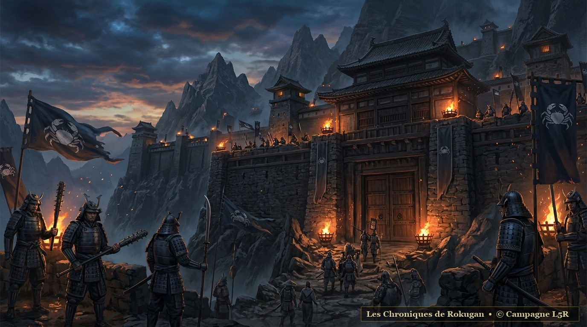
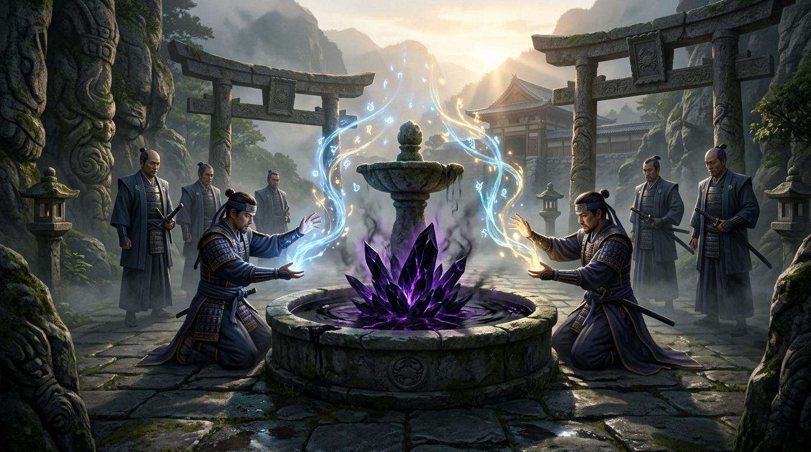
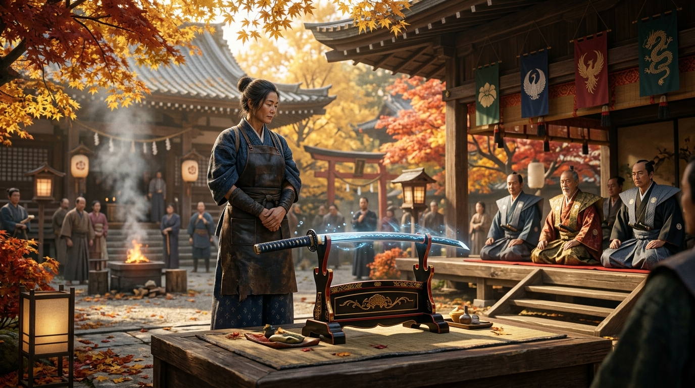

Par Akira Tsuruchi
Avec la participation de Samui, Ryumitaka, Okado
Après 6 mois de repos et de méditation dans la forteresse Tsuruchi, mon daimyo me demande d’aller sur le territoire Crabe pour la cérémonie annuelle des forgerons de la famille Kaiu. J’ai pour mission de lui ramener une arme sacrée et pour cela je n’ai aucune limite de budget. J’accède volontiers à sa requête, heureux de pouvoir sortir de mon quotidien.
Après avoir préparé mon voyage, je prends la route pour Shiro Kaotsuki No Higashi, le château des émissaires de l’est. En chemin, je retrouve mes compagnons et nous poursuivons notre trajet ensemble car nous avons bien entendu la même destination.
Peu avant d’arriver, nous faisons la rencontre de quatre rônins aux couleurs ostentatoires qui osent railler notre école. Ils sont richement vêtus et nous préférons ignorer ces « fils de » pour ne pas avoir de comptes à rendre à quelques familles locales. Je ravale donc ma fierté et poursuis mon chemin.
La forteresse est impressionnante, je n’en n’avais jamais vu de telle. Elle est protégée par une armée de samurai en armure lourde. Nous rencontrons Masamushi Hida qui nous explique que cette année c’est une femme qui fera le test. Samui présente au groupe un vieil ami de son clan. Il me défie et insiste lourdement si bien que je ne peux me défiler et accepte le duel de force. Il m’envoie balader mais certains crabes qui ont regardé le combat applaudissent mon courage. Toma vient me tend la main pour m’aider à me relever complimenter ma hargne et mon énergie. Masamushi nous invite chez lui pour diner et dormir.

Après un rapide petit déjeuner, nous suivant le flot de marchands et samurai de tout bord sur la route des serments brisée pour nous rendre sur le lieu de la cérémonie. Nous arrivons en fin d’après midi à l’auberge des cinq cerisiers. L’ambiance y est sereine bien que tous les clans soient représentés et nous ne remarquons aucune friction entre samurai de clan rivaux. Je pars prendre un bain et réussi à glaner des informations sur le concours de demain.
Une forgeron femme du nom de Kaiu Kamako affrontera Kaiu Tokubei. Kamako orpheline dès sa naissance a été recueilli par Isemasu Kaiu et il l’a formé à l’art de la forge dès son plus jeune âge. Kamako se révéla être doué et fut autorisé à forger des katanas dès l’âge de 20 ans pour les samurais du clan. De retour dans ma chambre le sommeil m’emporta rapidement mais cela ne fût que de courte durée car je suis réveillé par des cris.
En sortant de ma chambre, je vois Samui lancer son tetsubo par la fenêtre dans le dos d’un cavalier. Rejoins par nos pairs, Samui nous explique qu’il a entendu que des samurais veulent saboter le concours en mettant une pierre souillée dans la fontaine Moshido qui lors du concours. Nous fouillions la chambre des fuyards mais celle-ci est vide.
Nous partons aux premières lueurs de l’aube en direction de Shinden Kaiu Moshido pour tenter d’interrompre ce sacrilège. A notre arrivée, nous allons au temple et nous trouvons la fontaine souillée. Le Daimyo arrive attiré par la foule qui commence à se former autour de nous. Il exige de nous de nous une présentation formelle. Les formalités d’usage faites et la cause de notre présence éclaircie, un garde va chercher deux Shugenja pour identifier le mal de la fontaine. Les deux mentors forgeron arrivent pendant les Shugenja confirme nos dires et commence la purification de la fontaine. Nous sommes donc disculpés et libérés des suspicions qui pesaient sur nous. Pour nous remercier, le daimyo nous fait membre du jury pour le concours de demain. Yoshisake Kaiu, maitre des forgerons Kaiu nous prend à part et nous informe que la fontaine ne devait servir que pour Kaiu Kamako pour qu’elle bénisse son arme.

Le jury est composé de personnes prestigieuses et nous essayons de nous montrer digne de l’honneur qui nous ait fait. Les compétiteurs nous présentent deux katanas magnifiquement décorées et avec une finesse de gravure époustouflante de précisions. Kamako propose à Ryu qu’il bénisse sa lame, il accepte et fait appel au kami de l’eau pour faire perler une fine pellicule d’eau sur celle-ci.
Pendant l’entracte, Kamako vient nous parler et nous prenons plaisir à échanger avec elle sur sa passion pour la forge. Au beau milieu d’une phrase, elle se fait interrompre par un tumulte dans un coin de la cour. Ce sont des rônins qui se battent avec des gardes. Mes trois compagnons vont voir ce qui se passent mais je préfère rester en retrait près de la fontaine. J’avais raison tout ce remue-ménage n’était qu’un leurre, deux rônins surgissent de derrière la fontaine. J’appelle Ryu pour qu’il rapplique et pendant que je cloue d’une flèche un des assaillants, Ryu immobilise l’autre avec un de ses sorts. Puis Ryu semble avoir repéré quelque chose et se met à courir. Je me lance à sa poursuite et j’aperçois trois rônins un peu plus loin entrain de s’enfuir. L’un d’eux tient dans sa main un des Katanas du concours. Nous avons le temps de les tuer à distance avant qu’ils ne sortent du temple et nous récupérons la précieuse arme.
Le concours reprend avec une épreuve pour tester le tranchant de l’arme sur un bambou. Les deux armes obtiennent un score identique. Puis vient l’épreuve de la beauté statique, l’preuve de la beauté en mouvement et l’épreuve de la souplesse de l’arme. A la fin de la journée Kamako à une légère avance sur son adversaire.
Le lendemain matin a lieu l’épreuve du katana dans l’eau. La lame est posée verticalement dans un bassin sous un arbre et nous devons observer le comportement des feuilles qui tombent. Alors que toutes les feuilles glissent le long de la lame de Kamako comme si ce dernier leur faisait une ultime caresse avant qu’elles ne retournent à la terre. En revanche, le comportement est totalement différent pour le katana de Tokutei. Ce dernier semble attirer les feuilles qui tombent pours les trancher net.

Le vote du jury est unanime devant la spiritualité offerte par le katana de Kamako et c’est donc elle qui remporte le concours. En remerciement pour nos nombreux services, nous recevons chacun une arme de grande qualité pour notre daimyo.